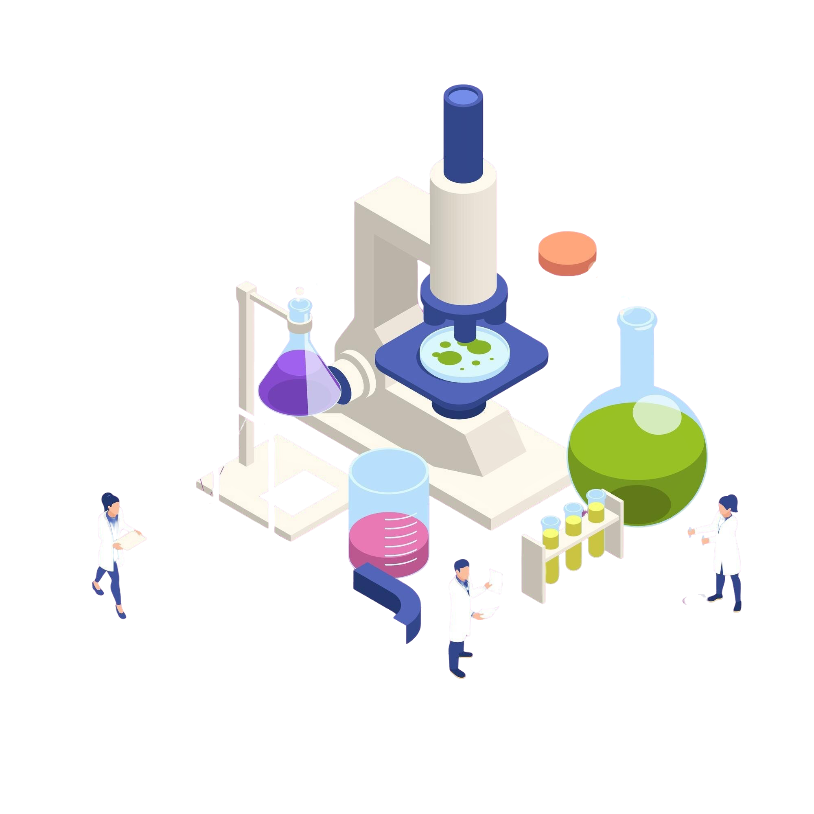

ASEAN Talent Pool
The platform showcases data on a total of 8,220 ASEAN talents. These researchers have published articles sourced from the SciVal and Scopus databases, with a cumulative total of 16,669 keywords across five industries.
More detail...
Search ASEAN Talent
The ASEAN Talent Pool's Pairing Search feature enables users to efficiently identify research collaborators by filtering criteria such as university, country, or specific keywords.
More detail...
Hosting
The ATM platform is a research initiative that collects data on research hosting capabilities worldwide, including ASEAN countries, Japan, Europe, the United States, and China. It aims to share information on each host's expertise in organizing research networks, inviting participation in hosting research projects and other collaborations.
 More detail...
More detail...
Funding Organization
Search for Opportunities Take advantage of the research funding function by finding opportunities that match your interests, funding needs, or hosting opportunities. Browse through various fellowships from around the world.
 More detail...
More detail...
Lab Location
Sharing crucial resources such as research equipment, post-master and post-doctoral programs, research assistants, or research problems.
 More detail...